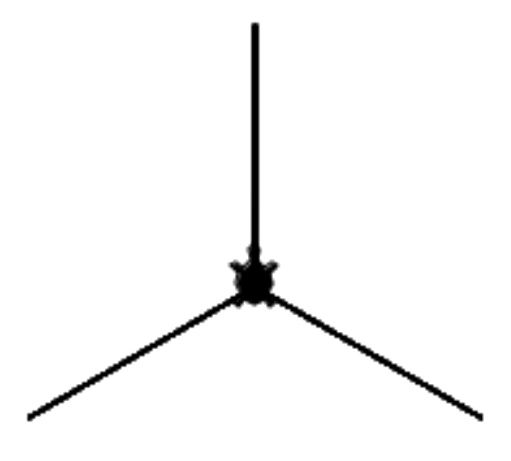
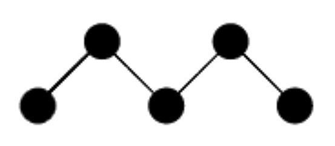
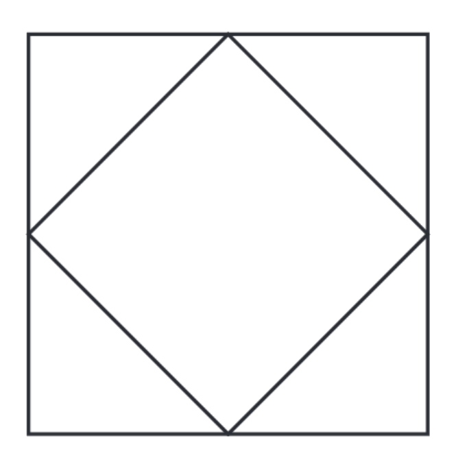

Übungen mit der Turtle
üìù Übung 2
Versuche die Turtle anzuleiten, ein gleichseitiges Dreieck mit der Seitenlänge 100 zu zeichnen. Findest du den richtigen Drehwinkel?
üìù Übung 3
 Zeichne die Figur auf der rechten Seite. Die Verbindungslinien haben eine Länge von 100. Beachte, dass die Turtle zum Schluss wieder in der Mitte der Figur sitzt und nach Norden schaut.
üìù Übung 4
 Zeichne die Figur auf der rechten Seite. Die ausgefüllten Kreise haben einen Durchmesser von 10, die Verbindungslinien eine Länge von 25.
Tipps:
- Du wirst die Anweisung
Turtle.dot(groesse);benötigen. - Die Turtle ist am Ende nicht mehr sichtbar.
üìù Übung 5
Zeichne mit der Turtle ein regelmässiges Fünfeck (Pentagon) mit einer Seitenlänge von 150 Pixeln.
Tipp:
- Beim regelmäßigen 3-Eck (Gleichseitig) war der Drehwinkel 120°
- Beim regelmäßigen 4-Eck (Quadrat) ist der Drehwinkel 90°
- Beim regelmäßigen 5-Eck (Pentagon) ist der Drehwinkel ...
üìù Übung 6
 Zeichne mit der Turtle zwei Quadrate ineinander.
Tipp:
- Versuche die Länge der Diagonalen mit dem Satz des Pythagoras zu bestimmen
- Du wirst an einer Stelle die Wurzel von 2, also ungefähr 1.4142 benötigen.
üìù Übung 7
Das "Haus vom Nikolaus" ist ein Zeichenspiel für Kinder. Ziel ist es, das besagte Haus in einem Linienzug aus genau 8 Strecken zu zeichnen, ohne dabei eine Strecke zweimal zu durchlaufen. Zeichne das Haus vom Nikolaus mithilfe der Turtle.
üìù Übung 8
 Zeichne die Schneeflocke, wie rechts abgebildet.
Zeichne die Schneeflocke, wie rechts abgebildet.